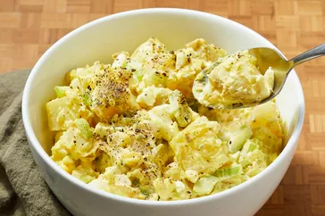
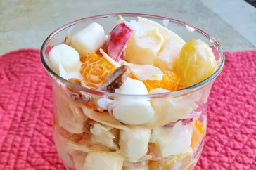

More-Recipes
Southern Potato Salad

Ingredients
- 4 potatoes
- 4 large eggs
- 1½ cup mayonnaise
- ½ stalk celery, chopped
- ¼ cup sweet relish
- 1 clove garlic, minced
- 2 tablespoons prepared mustard
- salt and pepper to taste
Awesome Pasta Salad

Ingredients
- 1 (16 ounce) package fusilli (spiral) pasta
- 3 cups cherry tomatoes, halved
- ½ pound provolone cheese, cubed
- ½ pound salami, cubed
- ¼ pound sliced pepperoni, cut in half
- 1 large green bell pepper, cut into 1 inch pieces
- 1 (10 ounce) can black olives, drained
- 1 (4 ounce) jar pimentos, drained
- 1 (8 ounce) bottle Italian salad dressing
Mama's Ambrosia

Ingredients
- 22 (11 ounce) cans mandarin orange segments, drained
- 2 (15.25 ounce) cans fruit cocktail, drained
- 1 cup chopped walnuts
- 2 cups miniature marshmallows
- 2 cups flaked coconut
- 1 (8 ounce) container sour cream
MORE DETAILS